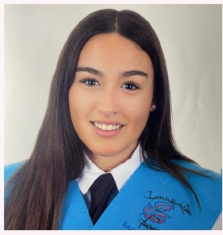

Grado en Trabajo Social
Actualmente
Estudiante universitaria, Campus de Jerez.
Curriculum Vitae
Descargar CVCurriculum Vitae
Estudiante de Trabajo Social
Puerto de Santa María
Estudiante de Trabajo Social con experiencia en limpieza hospitalaria y atención a las personas.
Ver CV
Responsable, empática y organizada, con facilidad para el trabajo en equipo y muchas ganas de seguir aprendiendo y desarrollándome profesionalmente.
Actualmente
Estudiante universitaria, Campus de Jerez.
2021-2023
IES Mar de Cádiz.
2017-2021
IES Mar de Cádiz.
Julio 2025 / septiembre de 2025
Hospital Pascual, Puerto de Santa María, Cádiz.
Julio 2024 / septiembre de 2024
Hospital Pascual, Puerto de Santa María, Cádiz.